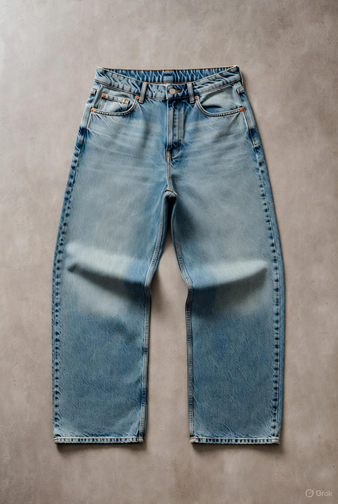

Nordic Denim Jeans
599 kr
Klassiska wide-leg jeans i ljusblå denim med vintage-känsla. Perfekt passform med hög midja och avslappnad silhuett. Tillverkade av hållbar bomull med tidlös stil som passar alla tillfällen. En favorit i vår kollektion.
Välj storlek
Välj färg
Produktinformation
- 100% ekologisk bomull
- Wide-leg passform med hög midja
- Ljusblå vintage wash
- 5-ficksdesign med koppardetaljer
- Hållbart producerad i Portugal
- Tvättas i 30°C, vrids ut och häng torrt
- Unisex design
- Benlängd: 76 cm (storlek M)
Storleksguide
- (26): Midja 66-68 cm, Höft 90-92 cm
- (28): Midja 70-72 cm, Höft 94-96 cm
- (30): Midja 74-76 cm, Höft 98-100 cm
- (32): Midja 78-80 cm, Höft 102-104 cm
- (34): Midja 82-84 cm, Höft 106-108 cm
- (36): Midja 86-88 cm, Höft 110-112 cm
Skötselråd
- Tvätta i 30°C med liknande färger
- Använd inte blekmedel
- Häng torrt för bästa resultat
- Kan strykas på låg värme
- Tvätta så sällan som möjligt för att förlänga livslängden